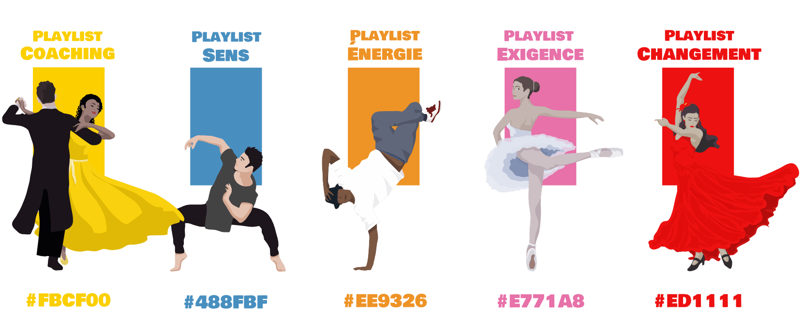
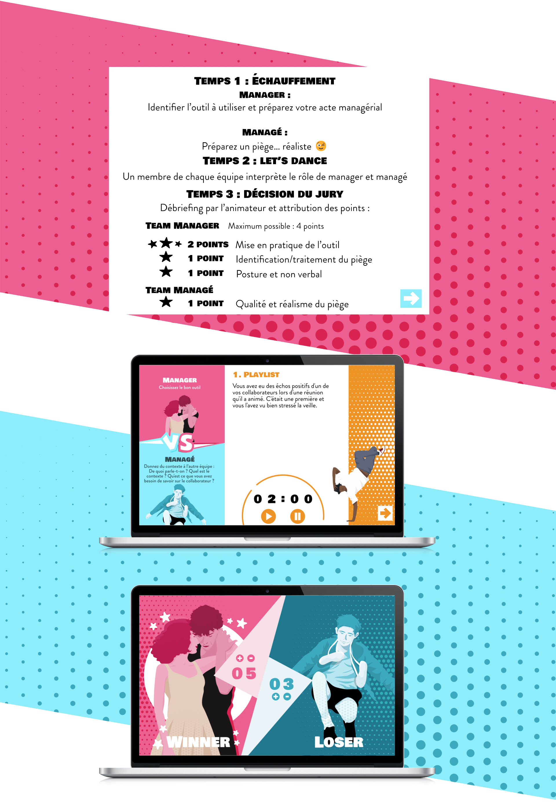

Management Battle est un jeu de formation sur le management en utilisant le jeu de rôle et les codes du battle de danse pour proposer une proposition ludique de la formation.
L'équipe Dirty Dancing contre l'équipe Billy Elliot qui reprennent deux classiques de films de danse qui vont s'affronter dans un battle de danse, en changeant régulièrement de rôle entre manager et managé.
Cinq catégories de questions sur le management : Coaching, Sens, Énergie au travail, Exigence, Changement qui sont représentées par cinq types de danses différentes et cinq couleurs différentes : danse de salon, danse contemporaine, hip-hop, danse classique, flamenco.
 